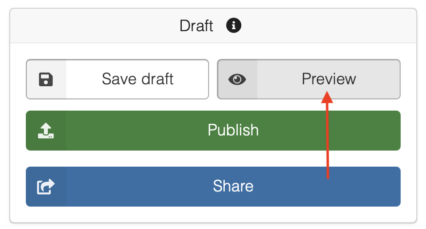
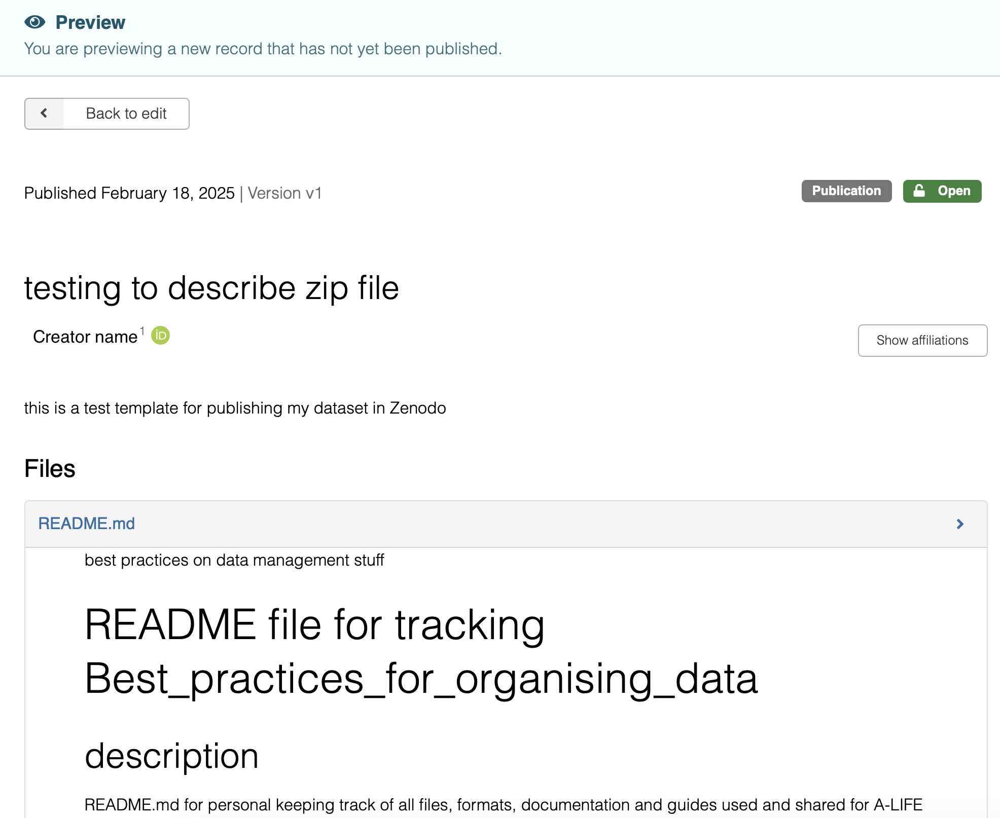
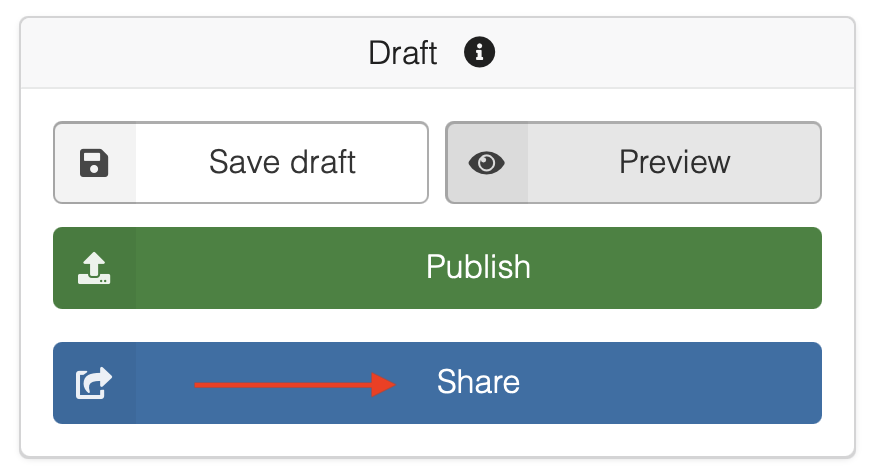
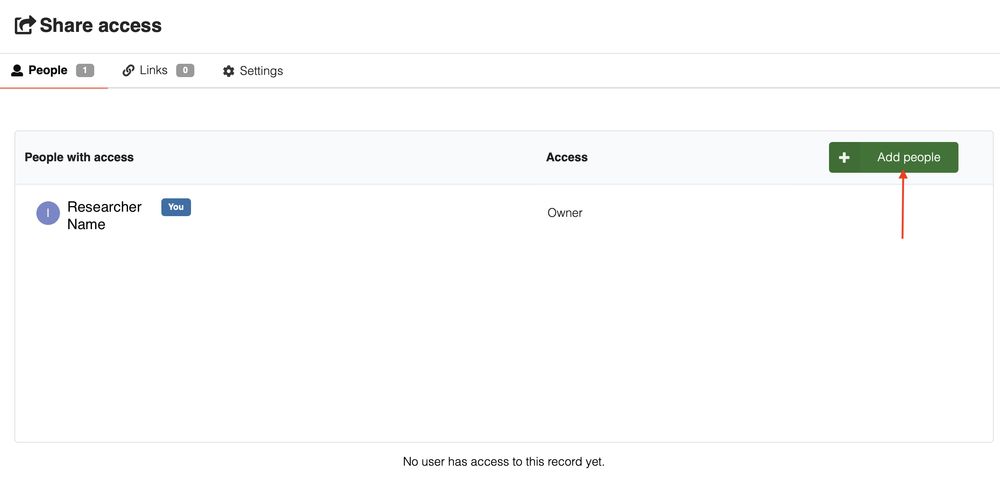
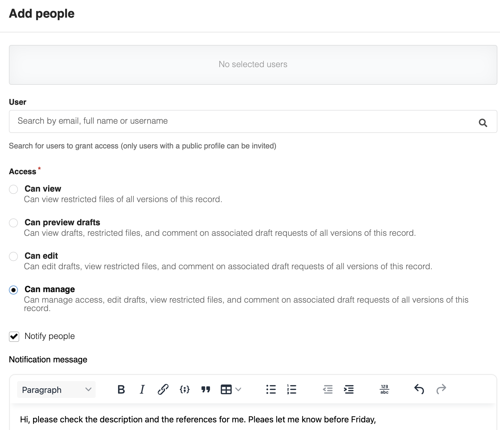
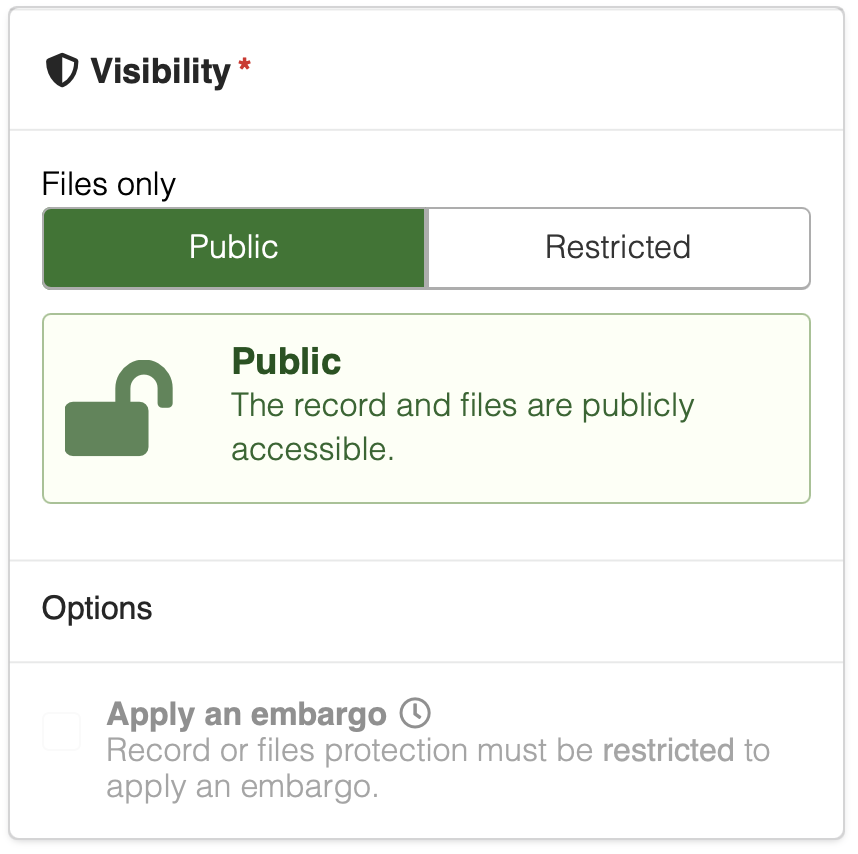
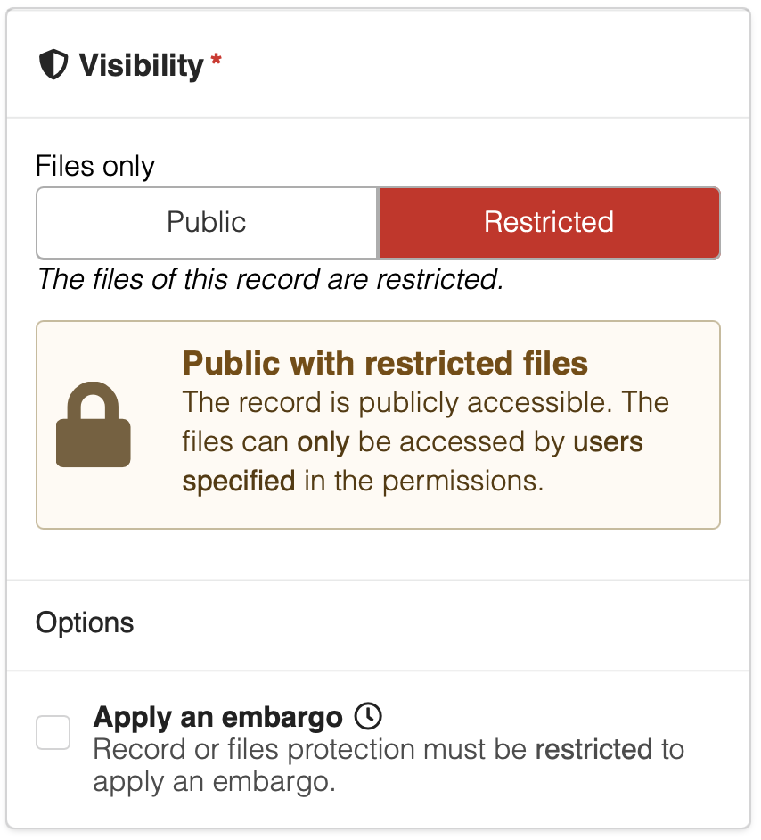
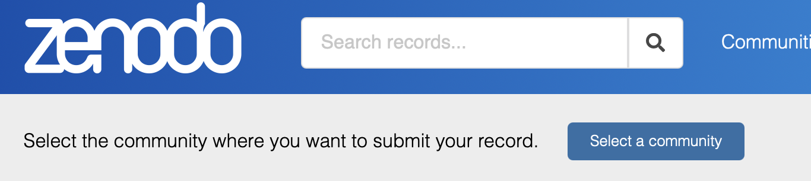
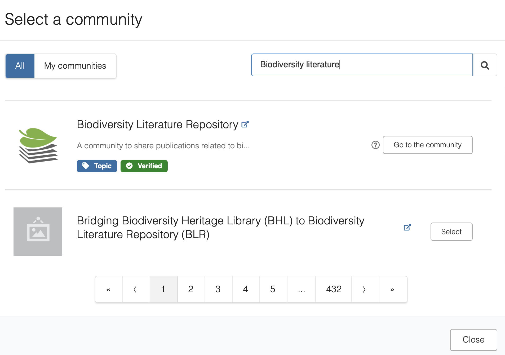
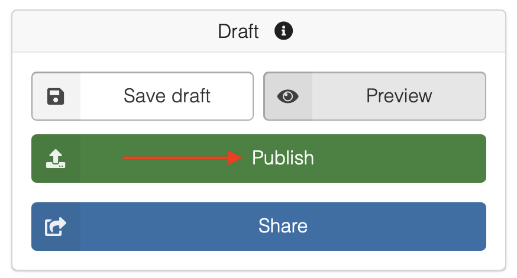

Publishing¶
Publishing¶
Overview
This is the Publishing page, part of Other Tools → Zenodo in the A-LIFE RDM collection.
This document covers the final steps before publishing your dataset in Zenodo:
Authors: Irene Martorelli, Brett Olivier — Last modification: 2026-08-02 — Version: 0.6.0
 1. Pre-publishing checks¶
1. Pre-publishing checks¶
Complete these checks before submitting for publication
 We strongly recommend going through each check below before publishing — it helps you catch errors and ensures your dataset meets quality standards.
We strongly recommend going through each check below before publishing — it helps you catch errors and ensures your dataset meets quality standards.
1a. Draft Preview¶
Before publishing the dataset, it is highly recommended to select the Preview option of the draft. It is on the side right side bar of the interface.

In the Preview option, you are able to view how the record will look like once it is published. This is always highly recommended to do as you will be able to also spot errors.

1b. Share Access¶
Zenodo also provides the possibility to Share your draft with others before submitting.

It is possible to add Zenodo users and invite people by sending an invitation.

This is useful for collaborating in the same draft before submitting and checking with your collaborators if everything provided is correct. It is requested to provide the type of Access for the new person added.

1c. Visibility¶
Zenodo provides only two options for data Accessibility: Open and Restricted.
Openallows all the metadata and all the data published to be public, thus visible and accessible to everyone. This includes also the option to download the data files.

- For the
Restrictedoption, only the metadta information will be visible while the data files can only be accessed by users specified in the permissions.

1d. Community¶
Zenodo provides the possibility to submit the dataset to a Community. This option can be done by "Select a Community"option.

There is then a selection of communities that you can pick from. Submit your dataset record for inclusion in a Community from the list. The Community curators are responsible for curating the dataset record and finally accept/decline the record into the Community. More than one Community can be selected.

Submitting your record to a Community offers several advantages -- such as increasing the visibility and impact of your research. It improves findability, accessibility, and reusability of your dataset, and can also lead to institutional recognition and metadata improvement.
Communities in Zenodo
Read more about how to submit to a Community and how to create a Community in Zenodo submit to community1.
2. How to publish your data in Zenodo¶
You can only delete an unpublished record. Published records cannot be deleted except under special circumstances.
You can save the dataset draft and review it before finally clicking the "Publish" button to make it publicly accessible. Make sure you have followed the Visibility option check correctly for the data files access.

What can you change after publishing?
Once your record is published, not everything works the same way:
- Metadata (title, creators, description, licence, etc.) — can be edited directly at any time without creating a new version.
- Data files (adding, removing, or modifying files) — requires creating a new version of the record. This generates a new DOI for the updated version.
New versions are linked to all previous versions — so if someone has cited or saved an earlier DOI, it still works and points to that specific version. Zenodo also always provides a link to the most recent version, so users can find the latest update.
See Zenodo — How to manage versions2 for step-by-step instructions.
Your dataset is now live in Zenodo! 
Congratulations — your dataset has a permanent DOI and is now openly available, citable, and searchable worldwide. You have made your research reusable for others!
Share your DOI with us at data@aimms.vu.nl — we would love to feature it as an example in our growing documentation.
Further reading
Zenodo Help Documentation
Zenodo — Submit to a Community
Zenodo — How to manage versions
-
Zenodo | Documentation — Submit to community: https://help.zenodo.org/docs/share/submit-to-community/ ↩
-
Zenodo | Documentation — Manage versions: https://help.zenodo.org/docs/deposit/manage-versions/ ↩